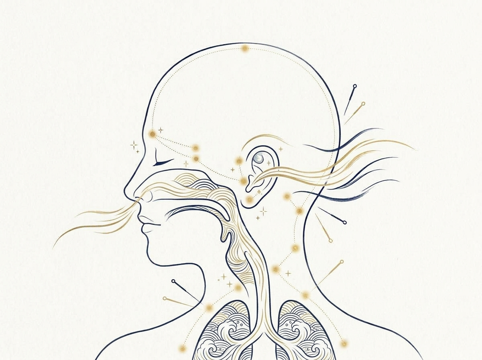

副鼻腔真菌症の鍼灸
副鼻腔内でカビ（真菌）が増殖して強い炎症を起こす病気です。手術・抗真菌薬を最優先とし、術後安定期の体調を支えます。

このようなお悩みはありませんか？
- ✓片側の鼻から膿性やネバネバした鼻水が出る
- ✓悪臭のあるチーズのような塊が鼻から出た
- ✓抗菌薬を飲んでも副鼻腔炎の症状が改善しない
- ✓片側の頬の痛みや腫れ、鼻出血が続いている
原因・メカニズム
副鼻腔真菌症は、環境中に常在するアスペルギルスやムコール、カンジダなどの真菌が副鼻腔内で塊を作り強い炎症を起こす病気です。糖尿病や免疫低下、長期の抗菌薬・ステロイド使用などが発症リスクを高めます。一般的な抗菌薬は効かず、内視鏡手術による真菌塊の摘出と副鼻腔洗浄が基本です。特に浸潤型（侵襲性）は眼や脳へ進展し視力障害や命に関わるため、緊急手術と抗真菌薬投与が必須となります。
当院の施術アプローチ
1. 浸潤型の緊急治療および耳鼻咽喉科での手術・抗真菌薬治療を最優先とし、術後安定期・主治医許可下で補完的ケアを行います
2. 足三里などのツボで胃腸機能と全身のコンディションを整え、術後の回復力と体調維持をサポートします
3. 天迎香や鼻通など鼻周囲のツボと首肩の調整により、安定期の鼻の違和感やストレスの緩和を図ります
よくある質問（FAQ）
Q. 視力低下や強い顔面の痛み・高熱がある場合はどうすればよいですか？
浸潤型（侵襲性）副鼻腔真菌症の危険があるため、直ちに耳鼻咽喉科や救急医療機関を受診してください。
Q. 手術後の回復期に鍼灸で体調を整えることはできますか？
はい、主治医の経過観察のもとで状態が安定し許可が得られていれば、体力回復や自律神経・鼻周囲の巡りを整えるケアとしてご相談いただけます。
#副鼻腔真菌症#真菌性副鼻腔炎#アスペルギルス#天迎香#鼻通#足三里